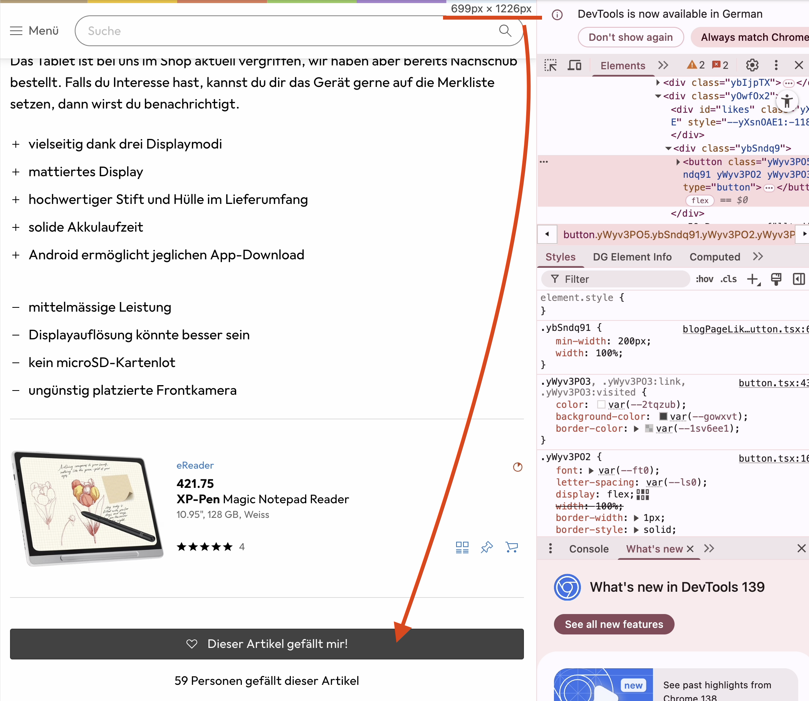
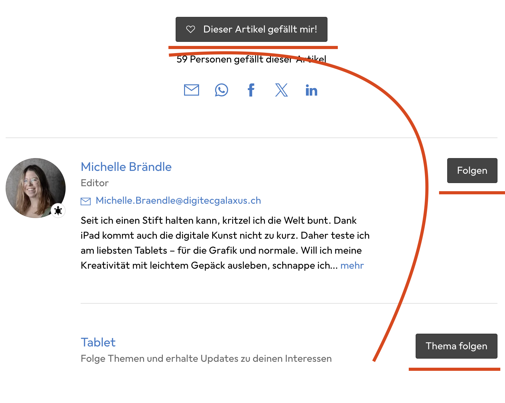

Responsive is key
üéØ Warum Responsive Design?
Wenn wir eine Page für möglichst viele Endgeräte nutzen wollen, sollten wir sie responsive gestalten.
üìñ Siehe auch: Responsive Web Design Guide
üí° Falls du nicht klarkommst, nutze den Stand aus GitHub
Mobile First?
Desktop First vs. Mobile First
Wenn wir eine Seite responsive gestalten, sollten wir uns festlegen:
| Ansatz | Beschreibung | Heute empfohlen? |
|---|---|---|
| Desktop First | Zuerst Desktop, dann kleiner | ❌ Veraltet |
| Mobile First | Zuerst Mobile, dann grösser | ✅ Standard |
Was bedeutet Mobile First?
Grundsatz: Wir gehen immer davon aus, dass es ein Mobile-Gerät mit schmalem Screen ist.
Praktische Beispiele:
| Element | Mobile | Desktop | Grund |
|---|---|---|---|
| Margins | 0px | 24px | Mehr Platz verfügbar |
| Button-Breite | 100% | fit-content | Schmaler Screen nutzen |
| Font-Size | 16px | 18px | Bessere Lesbarkeit |
Fazit: CSS für Mobile definieren, dann für breitere Bildschirme erweitern!
Breakpoints definieren
Galaxus Design System
Damit wir überhaupt verschiedene Bildschirmbreiten unterstützen, müssen wir Breakpoints definieren.
Breakpoints = Stellen im Screen, wo wir sagen "hey, jetzt sollte ich etwas am Design anpassen"
Galaxus Breakpoints
Referenz: Galaxus Screen Ranges
| Range | Breite | Geräte |
|---|---|---|
| zero → xs | 0 - 699px | Mobile |
| xs → s | 700px - 999px | Tablet |
| s → m | 1000px+ | Desktop |
Media Queries - Button responsive machen
CSS-Magie: Media Queries
Media Queries ermöglichen, auf den aktuellen Screen dynamisch zu reagieren.
Regel: Bis zum ersten Breakpoint gilt Mobile → da müssen wir nichts Spezielles tun.
Button-Problem analysieren
Der Like-Button ist auf Mobile zu schmal und sollte die ganze Breite einnehmen, damit er optisch besser wirkt.
Browser-Analyse mit Dev Tool:
- bis 700px: Button volle Breite
- ab 700px: Button schmal
Responsive-Verhalten
| zero → xs (699px) | xs (700px) → ∞ |
|---|---|
|  |  |
Für unseren Button bedeutet dies, wir müssen ihn beim xs-breakpoint auf schmal definieren. Gehe dazu erneut zum button.css file und suche die Stelle raus, die wir mit einem zusätzlichen CSS definiert haben.
CSS-Implementation
Wir können mit einem Media Query den Button so direkt übersteuern, dass er ab dem xs-breakpoint schmal bleibt. Dafür entfernen wir unsere spezialklasse wieder, die wir zuvor angelegt haben.
/* ENTFERNEN: */
&.width-200-fit {
min-width: 200px;
width: fit-content;
}
Media Query hinzufügen
Neues Button.css mit Media Query:
button {
background-color: #eee;
color: #000;
border: 1px solid #0003;
border-radius: 3px;
padding: 7px 15px;
width: 100%; /* Mobile First: Volle Breite */
cursor: pointer;
text-align: center;
font-family: inherit;
font-size: inherit;
&:hover {
background-color: #ddd;
}
&:focus-visible {
background-color: #ddd;
}
&.primary {
background-color: #444;
color: #fff;
&:hover {
background-color: #000;
}
&:focus-visible {
background-color: #000;
}
}
&.disabled,
&.primary.disabled {
color: #0006;
border: 1px solid #0001;
}
/* Responsive Styles */
@media screen and (min-width: 700px) {
width: fit-content;
min-width: 200px;
}
}
Design-Überlegung
Wenn wir das so machen, applizieren wir das Verhalten auf alle Buttons. In der Vorlage ist das eigentlich nicht so. Jedoch ist das tatsächlich nicht mal so schön:

Problem: Die Buttons wirken etwas unsauber und es gibt quasi eine Zick-Zack-Linie.
Insider-Info: Der Bereich wird aktuell bei Clippy tatsächlich neu gestaltet!
HTML bereinigen
Entferne zu guter Letzt die CSS-Klasse im HTML:
<!-- ENTFERNEN: class="width-200-fit" -->
<button class="primary">❤️ Gefällt mir</button>
Resultat
✅ Was haben wir erreicht?
- Mobile First Ansatz implementiert
- Responsive Breakpoints definiert
- Button-Verhalten optimiert
- Sauberer Code ohne Spezialklassen
üîó Fertige Version
Die komplette Lösung findest du unter: GitHub - Responsive Version
Responsive Design erfolgreich implementiert! üéâ